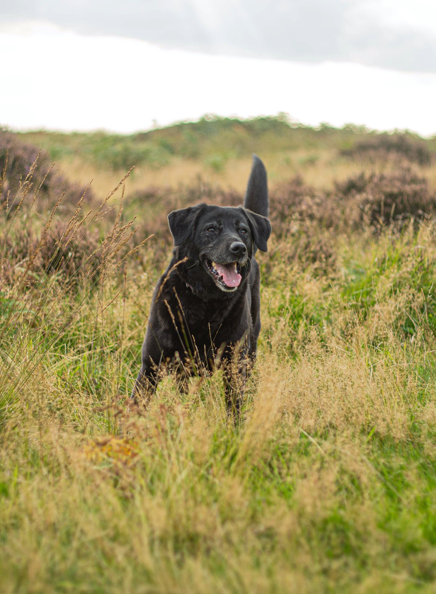

Nullam posuere erat vel placerat rutrum. Praesent ac consectetur dui, et congue quam. Donec aliquam lacinia condimentum. Integer porta massa sapien, commodo sodales diam suscipit vitae. Aliquam quis felis sed urna semper semper. Phasellus eu scelerisque mi. Vivamus aliquam nisl libero, sit amet scelerisque ligula laoreet vel. Nunc ullamcorper ipsum at diam congue luctus. Sed nec sapien blandit, tempor quam non, consectetur turpis. Morbi libero lorem, hendrerit sed metus non, malesuada placerat nulla. Sed nisi turpis, rutrum eget rutrum euismod, consequat ullamcorper eros. Quisque tortor nunc, sodales convallis nisl non, bibendum tincidunt tortor. Etiam pellentesque tincidunt nunc, a dignissim dolor tempus et. Pellentesque in urna ligula. Fusce ligula velit, mollis ac diam non, rutrum fringilla turpis.
Aliquam consequat, nulla sed sodales convallis, sem odio porttitor justo, non volutpat augue libero eget neque. Nunc consequat arcu nec tortor venenatis tempus a placerat mauris. Nam ultricies consequat ligula, et placerat arcu ultrices a. Sed placerat ipsum lacus, at imperdiet nisi imperdiet at. Vivamus diam dui, accumsan quis lacinia ac, sollicitudin feugiat metus. Vestibulum a velit ac eros blandit molestie non eget erat. Nunc eget odio erat. Nulla sit amet enim pharetra tortor molestie tempor nec sed turpis. Cras eget odio at erat dictum tincidunt. Sed facilisis convallis mi, eget tempor nunc pellentesque pulvinar. Etiam volutpat luctus tristique.
Aliquam erat eros, pretium non facilisis id, mollis a lacus. Nam nunc nisl, consequat at est vel, ornare feugiat tortor. Phasellus tempor ex vel mi blandit convallis. Sed accumsan sapien quis bibendum posuere. Vivamus convallis mattis ipsum. Suspendisse viverra purus non mi cursus, vitae pulvinar dui condimentum. Donec dui lacus, pretium in neque vitae, laoreet tempus nulla. Maecenas ac augue bibendum, consectetur ante eu, vulputate ipsum.
Nullam volutpat, sem at hendrerit volutpat, magna orci facilisis purus, et venenatis sapien sapien pretium libero. Duis hendrerit eget metus at molestie. Duis leo lorem, interdum a placerat ut, ullamcorper at eros. Donec convallis auctor cursus. Integer placerat felis mauris, sed cursus diam sodales et. Phasellus mi nibh, scelerisque vulputate viverra ut, dictum vitae mi. In at blandit felis. Aenean id porttitor neque. Nam bibendum a orci non pretium. Pellentesque feugiat erat augue, quis venenatis diam mollis eu.